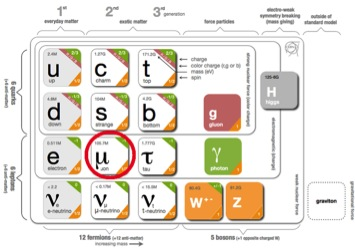

The muon (from the Greek letter μ) is an elementary particle similar to but much more massive than the electron.
The muon has electric charge -1 and a spin 1/2; an antimuon is the same but with charge +1.
The muon is classified, with the electron, the tau, and the neutrinos, as a lepton. Leptons are fundamental particles
that do not interact via the strong force.

The muon (circled in red) in the Standard Model chart.